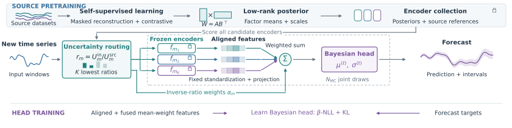
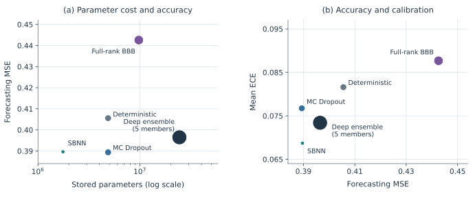
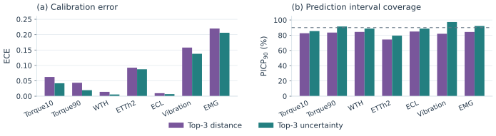

Compact Bayesian experts
Source pretraining combines masked reconstruction and contrastive learning. Singular Bayesian Neural Networks place learned posteriors on low-rank factors, W = ABT. The encoder posteriors are then frozen.
arXiv preprint · October 2026
Bayesian time series encoders for OOD detection, routing and forecasting
Compact experts that carry their own signal for selection.
An expanding collection of time-series encoders needs to be affordable to store and useful on new data. We use low-rank Bayesian encoders to address both: their weight posteriors compress the experts and their epistemic uncertainty guides label-free routing.
McGill University · Hydro-Québec
A collection, a routing signal, a forecast.
Conceptual view · several encoders per source
less encoder storage
vs. full-rank deterministic counterparts
reusable encoders
from four source domains
incoming datasets
for downstream forecasting
01 / Method
Source pretraining combines masked reconstruction and contrastive learning. Singular Bayesian Neural Networks place learned posteriors on low-rank factors, W = ABT. The encoder posteriors are then frozen.
Posterior weight draws reveal how much each encoder’s representation varies. We divide this uncertainty by its stored source reference, select the lowest ratios, and assign normalized inverse-ratio weights.
Selected representations are projected to 64 dimensions and combined. A forecasting head is trained on fixed encoder features. At prediction, joint encoder–head draws propagate epistemic uncertainty; the head also learns a conditional noise scale.

02 / Forecasting and storage
The main advantage is the storage–forecasting tradeoff. Final differences in forecasting accuracy and calibration are modest; the reduction in stored parameters is much larger.

| Family | Forecast MSE ↓ | ECE ↓ | 90% coverage | Stored parameters |
|---|---|---|---|---|
| SBNN ours | 0.3896 | 0.0687 | 90.47% | 1.759M |
| Deterministic | 0.4056 | 0.0816 | 82.60% | 4.868M |
| MC Dropout | 0.3894 | 0.0767 | 87.78% | 4.868M |
| Full-rank BBB | 0.4426 | 0.0877 | 92.29% | 9.731M |
| Deep ensemble (5) | 0.3965 | 0.0734 | 84.55% | 24.342M |
Coverage is assessed against the nominal 90% level and varies across datasets. Each uncertainty family selects its own four experts; the deterministic pipeline reuses SBNN selections and weights. The paper reports seed variability, negative log-likelihood and interval widths.
Storage at the selected ranks
The encoder collection uses 63.8% less storage than its full-rank deterministic counterpart. Including the head, SBNN uses 63.9% fewer parameters than MC Dropout, 81.9% fewer than full-rank BBB, and 92.8% fewer than the ensemble. These are model-parameter comparisons, not measurements of runtime memory or latency.
03 / Label-free selection
We compare two complete routing policies, each selecting three SBNN encoders: one ranks source-normalized epistemic uncertainty, and the other ranks statistical distance to the source datasets.

The model-family study above uses top-4 selection; this routing comparison uses top-3 for both policies. Neither routing policy sees forecast targets or updates encoder weights.
04 / What the ranking tells us
Lower reconstruction error does not consistently identify the best forecasting combination. Uncertainty helps narrow the search to useful experts; the downstream head can benefit from different combinations within that set.
Random and bottom-ranked selections within the low-uncertainty shortlist perform similarly to, and sometimes better than, the most confident experts in forecasting. Source-diverse selections also perform well. Full-pool random and high-uncertainty controls generally fare worse.
These comparisons change composition and, for some policies, aggregation weights. They establish a policy-level finding rather than isolating one cause of the ranking reversal.
Forecast MSE · lower is better
Mean results across seven incoming datasets. See the paper’s policy tables for calibration, coverage and all nine policies.
Scope and next steps
Compression depends on the chosen rank and regularization settings. Uncertainty responses can saturate under large shifts, and source-normalized ratios can be below one on unfamiliar inputs. The fixed 64-dimensional fusion and the fixed-feature head-training approximation are additional design choices whose effects deserve further study.
The policy results motivate a broader question: under what conditions does learning a pretext task bound downstream risk? Reconstruction and forecasting offer one setting for studying that relationship; the same question extends to other pretext and downstream tasks.
This work builds on Singular Bayesian Neural Networks, adapting compact Bayesian representations to modular time-series reuse.
Resources
@misc{toure2026modularbayesian,
title={Modular Bayesian Foundation Models: Bayesian time series encoders for OOD detection, routing and forecasting},
author={Mame Diarra Toure and Quang Hung Pham and Mohamed Ryad Zemouri and David Stephens and Luc Vouligny and Martin Gagnon},
year={2026},
eprint={2610.39043},
archivePrefix={arXiv},
primaryClass={stat.ML},
doi={10.48550/arXiv.2610.39043},
url={https://arxiv.org/abs/2610.39043}
}